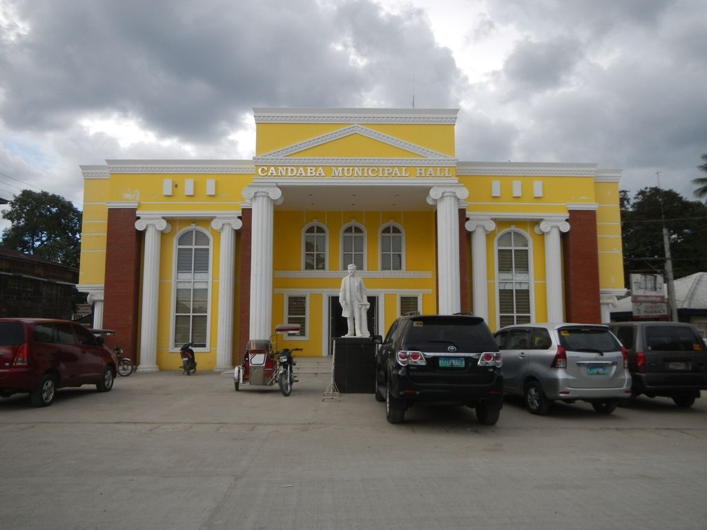
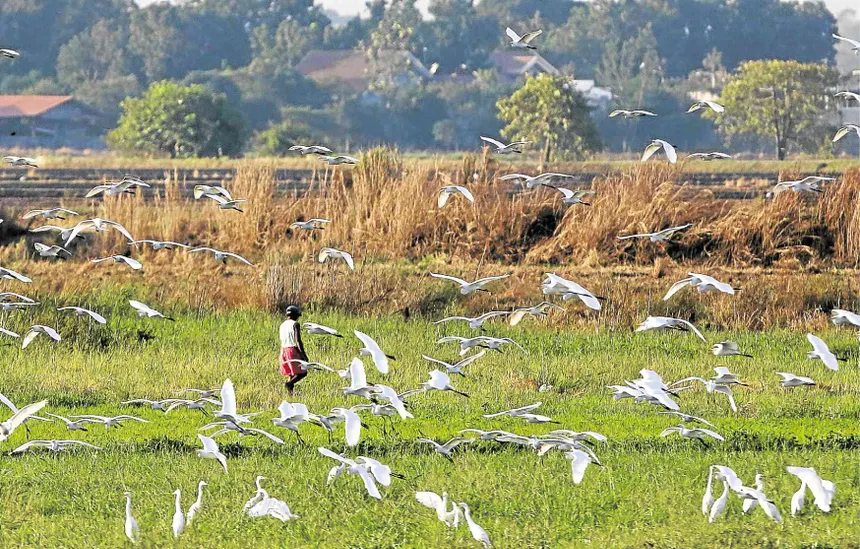
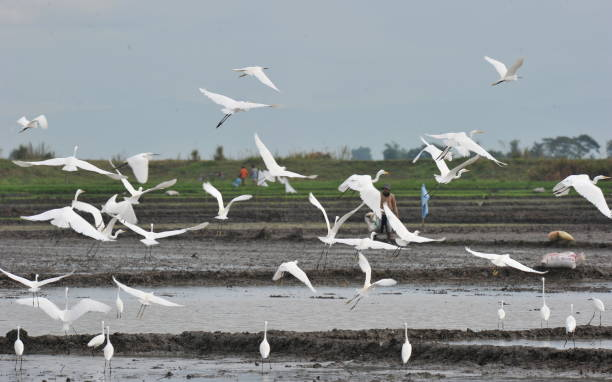

A sanctuary for migratory birds and nature lovers
Bird Sanctuary
The Candaba Swamp (also called the Candaba Wetlands) is one of the most important migratory bird habitats in Asia. Every year, thousands of ducks, herons, egrets, and other waterbirds fly in from as far as Siberia and China to spend the cooler months in this sprawling freshwater wetland.
For birdwatchers and wildlife photographers, Candaba is nothing short of paradise — especially during the migratory season from November to March, when the wetlands teem with life and color.


The best time to visit Candaba for birdwatching is during the Northeast Monsoon season — November through March — when migratory birds arrive in their largest numbers.